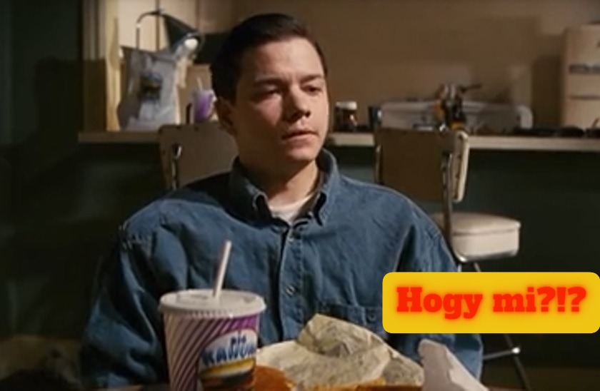

Üdv a Tasty Burger-ben!
Nálunk a hamburgerek nem csak kaják - karakterek is. Éttermünk nem egy szokványos gyorsétterem. Ez egy neo-noir burger-univerzum, egy szelet mozi, egy harapásnyi Tarantino. Itt minden falat egy idézet, minden íz egy jelenet. A menü nem csak étel, hanem tisztelgés a kultfilm előtt.
Az enteriőr? VHS retró, neonfény és vérbeli noir hangulat. A zene? Pont az, amitől Mia Wallace elkezdene táncolni. A kiszolgálás? Gyors, határozott, mint Mr. Wolf. Nem érdekel a sablonburger? Jó. Minket sem. A Tasty Burger azoknak szól, akik szeretik az erős ízeket, az ikonikus pillanatokat, és nem félnek idézőjelesen enni és inni.

Tasty Burger - a sztorink
Nem csak egy újabb burgeres vagyunk. Egy jelenet vagyunk a kedvenc filmünkből. A Tasty Burger nem csak egy hely, ahol hamburgert kapsz. Ez egy életérzés, egy mozi-univerzum, ahol a sütő mögött Tarantino szelleme lebeg, és ahol minden falat egy kultidézet. A sztorink valahol ott kezdődött, amikor egy átlagos nap végén feltettük magunknak a kérdést: „Mi lenne, ha a világ legmenőbb burgerét nem csak jól készítenénk el, hanem stílussal ötvöznénk?” És akkor megszületett a Tasty Burger - egy olyan hely, ahol a burger annyira jó, hogy idézőjelbe tennéd.
hogy mi vezérel minket?
Minőség, karakterrel: Nálunk nincsen sablon. Minden burger, shake és desszert egyedi recept, pont úgy, ahogy egy Tarantino karakter is sosem sablonos. Filmrajongóknak, kajamániásoknak: Ha egyszer ettél nálunk, nem csak jóllaksz, hanem elviszel egy jelenetet magaddal. Stílus és szemtelenség: Mert a világ tele van unalmas gyorsételekkel. Mi nem kérünk belőle. És te sem fogsz elégedetlenül távozni.
egy kis kontextus…
Hogy miért a ponyvaregény? mert az a film, ahol egy burger filmtörténelmi jelentőségű lett. És mi szeretnénk, ha nálunk minden burger és koktél legalább olyan emlékezetes lenne, mint Jules monológja.

rólad is szól
A Tasty Burger nem csak rólunk szól. ez rólad is szól, ha: szereted az egyedi helyeket, kajában is keresed a sztorit, tudod, mi az a „royale with cheese”, vagy csak egyszerűen szeretsz jókat enni, méghozzá stílusosan.

ugorj be hozzánk!
Tudni akarod, mitől tasty egy burger? A Jules-féle harag, a Mia-féle milkshake és a megannyi Ponyvaregény szereplők által ihlette ízletes burgereink?